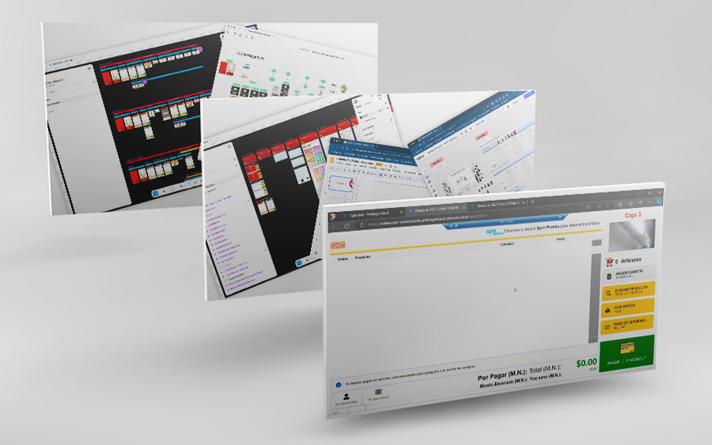

En mi rol actual en una consultora, mi cliente principal es OXXO, una tienda de conveniencia que está adaptando sistemas de autocobro para permitir a sus clientes realizar pagos de forma autónoma. Me uní al proyecto después del primer MVP, donde revisé el estado actual y comencé a identificar elementos clave para crear una línea gráfica coherente. Aplicando los principios heurísticos de Nielsen, realicé un análisis inicial para detectar problemas de usabilidad, pero enfrentamos limitaciones, como la necesidad de ajustar colores y contrastes en algunos botones. Esto llevó a una negociación con el equipo de desarrollo para implementar ajustes sin afectar significativamente los tiempos del proyecto.
Mi enfoque fue establecer una comunicación efectiva con los equipos para priorizar soluciones y mitigar riesgos de usabilidad. A través de un proceso colaborativo, logramos mitigar varios problemas, aunque algunos continúan, pero seguimos en un proceso de mejora continua.
También estoy trabajando en la evolución de nuestro UI Kit, buscando hacerlo más escalable a un sistema de diseño completo. Aunque aún no se ha implementado del todo en el equipo de desarrollo, en nuestro equipo de diseño ha sido una herramienta clave para integrar nuevas funcionalidades, como el programa de lealtad, pagos de servicios y control de ventas de productos restringidos como alcohol.
Herramientas Utilizadas:
- Figma
- Azure
- Metodología Scrum
Beneficios Obtenidos:
- Mejora continua del sistema de autocobro con la mitigación de problemas de usabilidad.
- Creación de una base sólida para la integración de nuevas funcionalidades a través del diseño centrado en el usuario.
- Implementación efectiva de un UI Kit como primer paso hacia un sistema de diseño escalable.